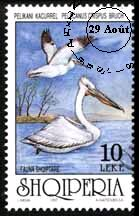

Wednesday, August the 17th, 2005
back to: title, date or indexes
While we are on the subject of other worlds (or at least other places), it is worth remembering that Dobson once wrote a pamphlet entitled Netherlands, Holland, Dutch—What's That About? The opening lines provide a summary of its subject matter:
We call China China and its people Chinese. We call Finland Finland and its people Finns. We call Germany Germany and its people Germans. I could go on, but I won't. What I want to know is, why do we have two interchangeable names—the Netherlands and Holland—for the country whose inhabitants we call Dutch? Why don't we say Netherlanders or Hollanders? What's all that about?
It's a remarkable pamphlet, chiefly because Dobson, having posed an interesting linguistic question, blathers on for over forty pages trying desperately to conceal the fact that he has done no research whatsoever. He simply makes things up and veers off at tangents. One such tangent is Dobson's brief look at what other nationalities call themselves. For example, the Chinese call China Zhongguo, the Finns call Finland Suomi, and, most enticingly, Shqiperi is where Albanians live and breathe and have their being.
There are times when I foolishly try to emulate Dobson, and I must confess that, like him, I have not bothered to research this Netherlands—Holland—Dutch business either. Perhaps a kind reader can enlighten me.

An Albanian postage stamp depicting a curly pelican